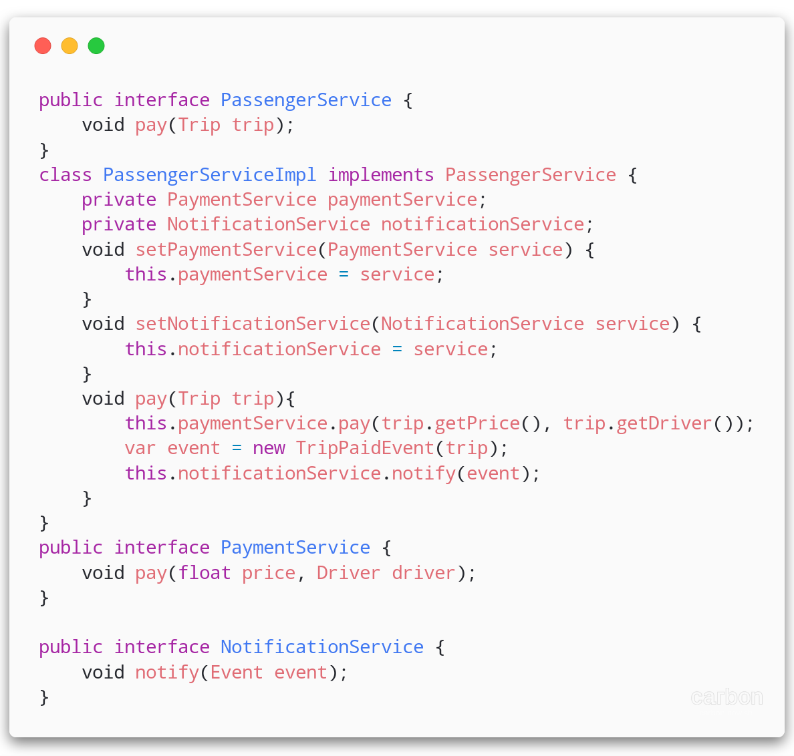
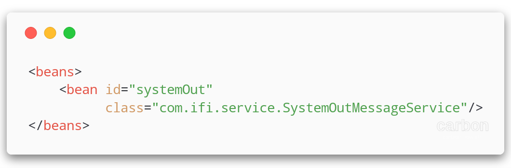

IFI - JEE

UBER

Un micro-service c'est :
-
Un ou plusieurs canaux de communication
- HTTP - REST/JSON
- Un ensemble de fonctionnalités du même domaine métier
- Une source de données dédié

un micro-service Java
On s'appuie sur les technologies connues: les servlets !

What is Spring?

Décomposé en projets
- spring-framework : dependency injection, transactions, web, mvc...
- spring-boot : accélérateur de développement
- spring-cloud : patterns et connecteurs pour produits orientés micro-services
- spring-security : gestion de l'authentification, protection contre les attaques
Dependency injection
un morceau d'UBER

La vision architecture

Le code du PassengerService
Quel est le problème de ce code?
S.O.L.I.D principles
- S : Single Responsability Une classe doit avoir une seule responsabilité
- O : Open/Closed Ouvert à l'extension, mais fermé à la modification
- L : Liskov Substitution Pouvoir utiliser un sous-type
- I : Interface Segregation Présenter plusieurs interfaces spécifiques
- D : Dependency Inversion Dépendre d'abstractions, et non d'implémentations
Is it S.O.L.I.D ?
| S | |
| O | |
| L | |
| I | |
| D |
Refactoring !

| S | |
| O | |
| L | |
| I | |
| D |
Rendre notre code S.O.L.I.D :
- Le rend testable
- Le rend compatible avec de l'injection de dépendances
Injection de dépendance
Laisser la plateforme fournir les dépendances:
- En fonction du contexte
- En fonction des composants disponibles
Nécessite des efforts de conception objet!
Injection de dépendances avec
spring-core : Découpage de l'application en "beans" = composants
Fournit un mécanisme d'injection de dépendance
- Inversion de contrôle (gestion du cycle de vie des beans)
- Injection de dépendances
Application context
Bean
- id : nom unique du bean
- class : classe Java d’implémentation du bean
- scope :
- singleton : une seule instance du bean
- prototype : une nouvelle instance à chaque demande
Application Context
Configuration XML (Spring 2 - ~2006)
Développement des beans
Configuration des beans
Application Context
Configuration Java (Spring 3+ >2009)
Développement des beans et utilisation d'annotations
Application Context
Déclaration des beans par annotations
- @Component : bean simple
- @Service : bean de stéréotype service
- @Repository : bean de stéréotype DAO
- @Controller : bean controller (spring web)
- @Scope(”singleton”) : déclaration du scope du bean
Injection de dépendance avec l'annotation @Autowired
Injection de dépendances avec
Injection de dépendances avec
Injection de dépendances avec
TP

Fin du cours
- Cours suivant : Persistance des données
- Retour